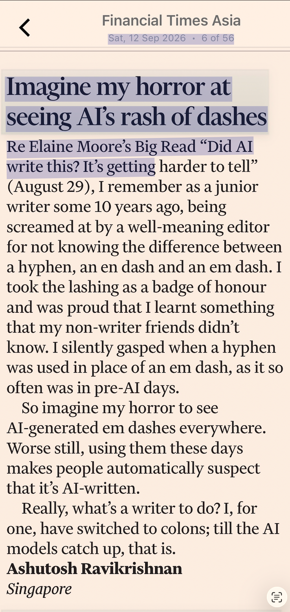

Stories worth
telling.
Over a decade telling the stories of everyday Singaporeans.
↓Articles
A LETTER TO THE EDITOR
Imagine my horror at seeing AI’s rash of dashes
A small lament about the em dash and the unfortunate suspicion that now follows its use. Published in the Financial Times, 12 September 2026.

Videos
About
I'm a Singapore-based writer, editor and communications professional with a soft spot for a good interview and a story that stays with you.
My work spans editorial features, video, corporate storytelling and communications across different industries. This space brings together a few of the pieces I've enjoyed making.